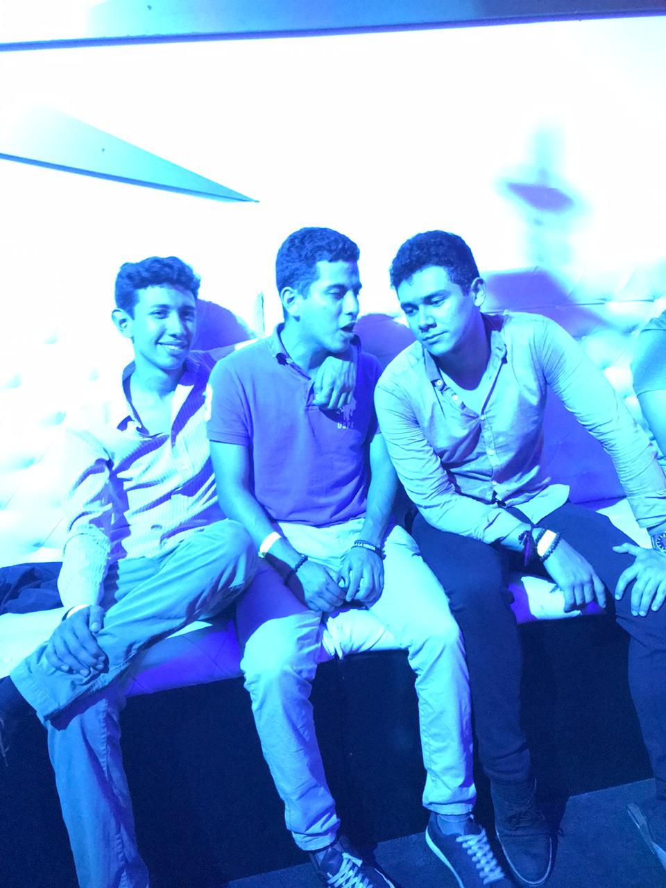
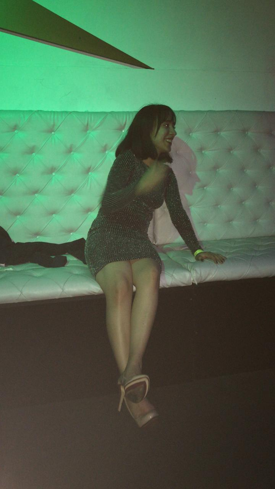
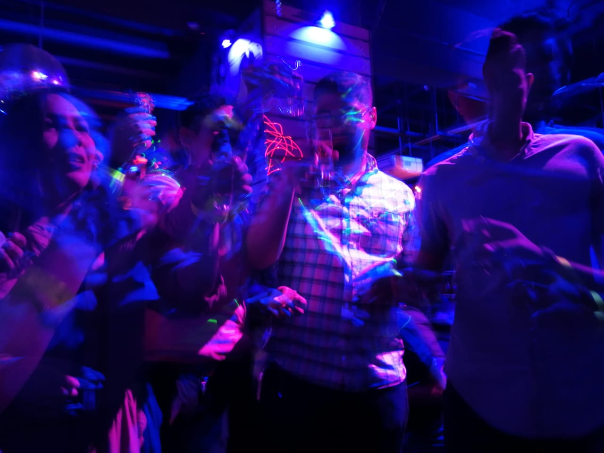
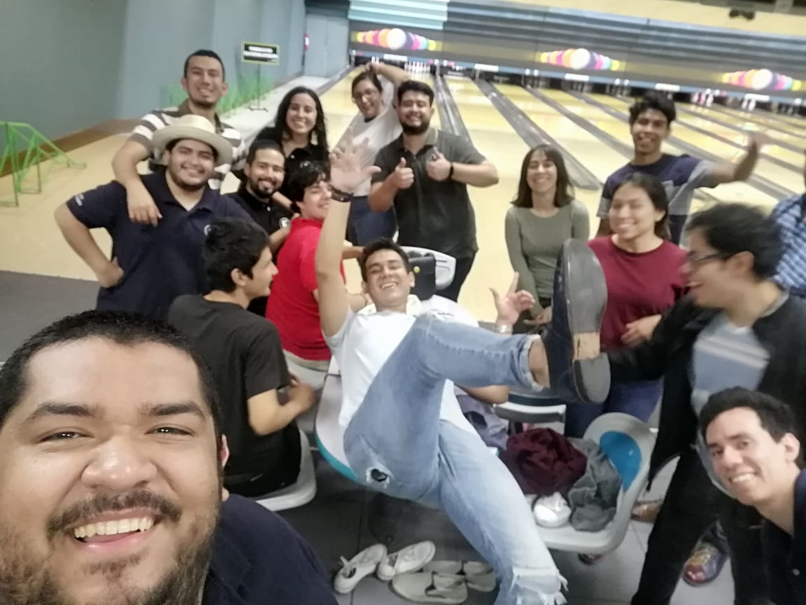
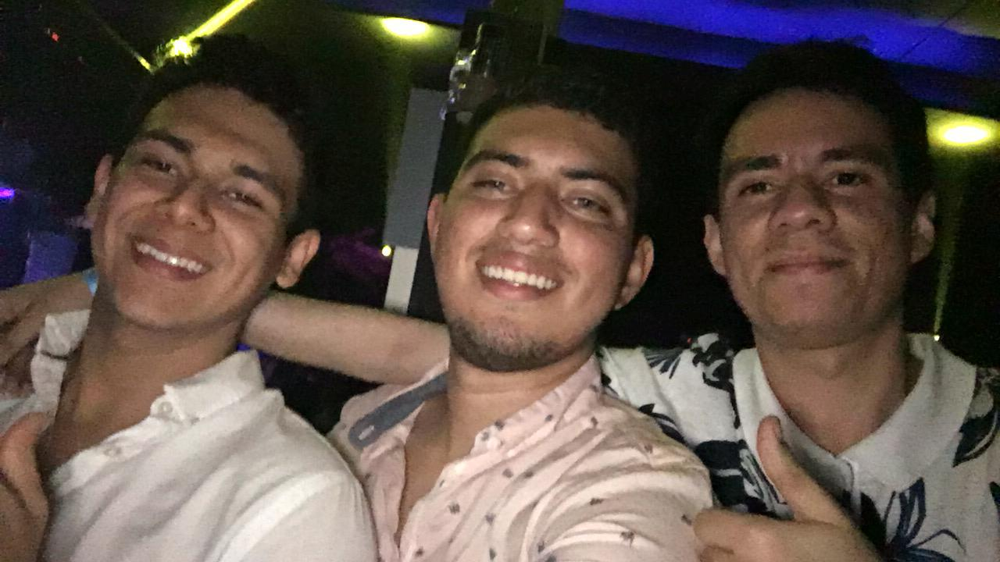

La semana en Guatemala comenzó comprando provisiones en un minisuper cercano, habíamos llegado recién por lo que no teníamos nada, siguió con la inauguración del congreso de ingeniería de la Universidad de San Carlos en el hotel
Intercontinental en Zona 10, nada del otro mundo, una cena en dónde pudimos ver gente de diferentes partes de centro america y sobre cómo nos invitaban a nunca dejar de creer en nueestros sueños,
nada del otro mundo realmente xd.
Luego de la cena regremos al tequila (nuestro hostal 'tequila sunrise', el cuál se quedó con muchas historias, un bello lugar a su manera) sólo para cambiarnos para ir a la fiesta del primer día...
la que llegó a ser quizá una de las mejores fiestas de mi vida ¡y con personas que ni siquiera conocía! (Fuimos con gente de la universidad a Guate es cierto, pero yo nunca les había ni dirigido la palabra)
al llegar nuestra primera expresión fue de: "wow qué bonito lugar" realmente en San Salvador no hay lugares tan bonitos para ir de fiesta y si son bonitos ya están quemados xd.
Bebimos un poco de alcohol y bailamos a más no poder, ¡un men de primer año se subió al escenario a representar a EL Salvador a ver quién bebía más rápido una Gallo! conocimos gente preciosa, bailamos con gente preciosa, y también tuvimos un mas rato
con una tica que luego hablaremos de ella xd, pero en general fue una noche legendaria.
Martes
El martes fue una masacre, empezaban las conferencias y habíamos llegado muy tarde el día anterior de la fiesta, algunos se quedaron dormidos, otros pusieron atención y lo lograron, a mí me dolía mucho la cabeza
así que me salí de mi charla y me fui a dormir porque era evidentemente que no la iba a aprovechar, al llegar la tarde fui a las ponencias generales (preciosas por cierto) hubo una de Internet of Things preciosa, sobre por qué
hay que recabar datos, sobre el por qué el IOT es la tecnología más en auge que existe hoy en día, de hecho gracias a esa charla deseo hacer un proyecto personal donde involucre ML y IOT, una camará fuera de mi cuarto que
reconzca una cara conocida, si es conocida que sólo le abra la puerta y si no que no lo hagaxd.
Llegó la noche así que era día de fiesta fuimos más personas esta vez ya que anterior muchos no fueron, no estuvo mal pero tampoco estuvo tan bien cómo la anterior,
pero no me quejo, adjunto funtos para vwerificarlo xd:



Miercoles
La noche anterior no había sido tan heavy cómo la del lunes así que la mayoría estabamos cuerdos y frescos, las charlas estuvieron interesantes, aunque pasó algo extraño...
Matus, Karla, Villalta, Trejo y otras personas que no recuerdo nos habíamos inscrito en una ponencia sobre desarrollo web y de la nada nos llegan a decir que nuestro ponente había muerto y nosotros
así de: "Puta F" pero no fue así sólo tuvo un accidente y la charla no se concretó así que nos movimos a otra antes que empezara la charla que iba a dar Emma sobre simulación
La charla de Emma estuvo bastante buena contó un chiste sobre una rana (que por respeto a la web no voy a escribir aquí xd) y en general fue un buen día.
Esta noche no hubo fiesta, fuimos a jugar bolos! y que cosa tan genial.

Jueves
El último día de ponencias, todos fuimos a nuestras respectivas charlas a las cuales por cierto yo entré a una de Amazon Web Services preciosa en la que me subió el interés
por aprender tecnologías en la nube, las charlas de la tarde también estuvieron bien terminando con inteligencia artificial aplicada a los negocios y cómo puedes sacarle provecho
a los datos que tus usuarios te generan con cada interaccion que tienen con tu negocio
La fiesta final fue en un lugar llamada The Palms, bastante fancy de hecho, todo ocurrió con normalidad y llegamos a salvo al tequila, un día tranquilo.

Viernes
Último día en Guatemala, todos fueron al zoologico y yo me escapé con una amiga que hice en la primera fiesta, su nombre es Saby, estudia ingenieria industrial en la USAC y fuea maravillosamente chula conmigo
fuimos al mercado a comer tipicos de Guate, conocimos a un Uber que es Colombiano, fuimos a conocer la USAC, conocí a sus amigos y el pupilaje donde vive y mucho de los alrededores de la universidad, fui un día realmente genial gracias a ella... ojalá la pueda volver a ver.
La fiesta final era de gala, comimos cómo no comimos en toda la semana, y bailamos cómo si no hubiera un mañana, un final digno para un viaje increíble el cuál recordaré toda mi vida, por toda la gente que conocí
por todo lo que sentí y por todo lo que viví...